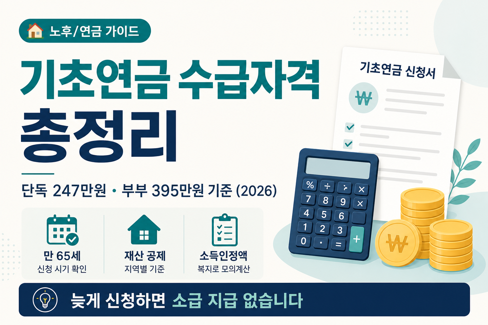

기초연금 수급자격 총정리 — 단독 247만원·부부 395만원 기준 (2026)
소득인정액·재산 환산·국민연금 연계감액까지, 65세 전에 표로 먼저 확인합니다

생일 숫자가 65에 가까워지면, 주변에서 “기초연금 신청했어?”라는 말을 듣기 시작합니다. 국민연금과 이름이 비슷해서 한 번에 헷갈리기 쉽습니다. 기초연금은 국민연금과 별도 제도이며, 만 65세 이상 가운데 소득인정액이 기준 이하인 분에게 지급됩니다. 오늘은 2026년 확정 수치만 모아, 선정기준액·소득인정액 계산·감액·신청 시기를 표로 정리합니다.
먼저 읽어주세요
본 글은 정보 제공이며 수급·투자 권유가 아닙니다. 개인별 소득·재산·가구 형태가 다르면 결과가 달라집니다. 아래 수치는 2026년 공표 기준을 바탕으로 했지만, 지역 구분·재산 평가·국민연금 급여액에 따라 달라질 수 있습니다. 개별 수급 여부는 반드시 국민연금공단·복지로 모의계산으로 확인하세요.
- 2026년 선정기준액(단독 247만원·부부 395만 2천원)과 2025년 대비를 표로 정리합니다.
- 소득평가액·재산 월 소득환산액 계산 예시를 단계별로 보여 드립니다.
- 부부감액·국민연금 연계감액·신청 시기(소급 없음)를 함께 짚습니다.
1. 도입 — 65세가 다가오면 가장 먼저 확인할 것
월급쟁이로 일하다 은퇴를 앞두면, 현금흐름 표에 국민연금·건강보험료가 먼저 들어갑니다. 그다음 줄에 기초연금이 빠져 있으면 나중에 “왜 몰랐지?”가 됩니다. 기초연금은 모든 65세 이상에게 자동 지급되는 것이 아닙니다. 소득인정액이 선정기준액 이하여야 하고, 신청을 해야 받을 수 있습니다. 늦게 신청하면 그전 달은 소급되지 않습니다.
은퇴 직후 건강보험료가 갑자기 오르는 이야기는 은퇴하면 건강보험료 폭탄? 글에서 다뤘습니다. 기초연금은 “보험료”가 아니라 “현금 수입” 쪽입니다. 다만 국민연금을 받으면 소득인정액에 잡히고, 급여가 높으면 연계감액이 적용될 수 있습니다. 연금·의료비·기초연금을 한 장에 적어 두면 가족 회의가 짧아집니다.
복지로(bokjiro.go.kr)의 ‘모의계산 > 기초연금’으로 미리 점검할 수 있습니다. 서류를 모으기 전에 숫자 감을 잡는 편이 덜 당황스럽습니다. 오늘 표는 그 모의계산에 들어가는 항목 이름을 익히는 데 초점을 맞췄습니다. 부모님 생신이 다가오면 미리 표를 같이 읽어 보는 것도 좋은 시작입니다. 형제자매와 “누가 신청 도와줄지”만 정해 두어도 현장에서 덜 헤맵니다.
2. 기초연금이 뭔가 — 국민연금과 어떻게 다른가
국민연금은 직장·지역 가입 기간과 납부 이력에 따라 급여가 정해지는 사회보험입니다. 기초연금은 노후 소득 보장을 위해 국가가 지급하는 공적연금 성격의 급여입니다. 둘 다 “연금”이라 불리지만, 가입·산정·감액 방식이 다릅니다. 국민연금을 받고 있어도 기초연금 신청 자체는 가능하지만, 국민연금 급여가 일정 수준을 넘으면 기초연금이 줄어들 수 있습니다.
국민연금
가입·납부 이력 기반. 조기·연기 수령 선택 가능. 소득인정액의 기타소득에 포함됩니다.
기초연금
만 65세 이상·소득인정액 기준 이하. 신청 필수. 국민연금과 별도 창구이지만 연계감액이 있습니다.
국민연금 수령 시기를 앞당기거나 미루는 선택은 국민연금 조기수령 vs 연기수령 글에서 비율 중심으로 정리했습니다. 기초연금은 “언제 받을지”보다 “소득인정액이 기준 이하인지”가 먼저입니다. 두 제도를 같은 표에 넣지 말고, 항목별로 따로 계산한 뒤 합치는 편이 헷갈리지 않습니다.
기초연금은 비과세 소득입니다. 받았다고 해서 종합소득세 신고 대상이 되는 것은 아닙니다. 다만 소득인정액 산정 때 국민연금 등 공적이전소득은 잡히므로, “세금”과 “수급 자격”을 구분해서 보셔야 합니다. 다른 공적연금을 함께 받는 경우에도 기타소득 항목에 반영되는지 공단 안내를 확인하세요.
3. 2026년 선정기준액 — 단독 247만원 / 부부 395만 2천원
기초연금 수급 자격의 첫 관문은 월 소득인정액이 선정기준액 이하인지입니다. 2026년 기준 만 65세 이상 가운데 소득인정액 하위 약 70%에게 지급된다고 안내됩니다. 가구 형태에 따라 기준이 달라집니다. 배우자가 있으면 부부가구 기준이 적용됩니다.
| 구분 | 2026년 월 소득인정액 | 2025년 대비 | 비고 |
|---|---|---|---|
| 단독가구(배우자 없음) | 247만원 | 2025년 228만원에서 인상 | 배우자가 없는 65세 이상 가구 |
| 부부가구(배우자 있음) | 395만 2천원 | 부부 합산 소득인정액 기준 | 두 사람 소득인정액 합이 이하이면 각각 수급 검토 |
※ 선정기준액은 매년 조정될 수 있습니다. 최신액은 국민연금공단·복지로 안내를 확인하세요.
2025년 단독가구 선정기준액이 228만원이었던 점을 기억해 두면, “작년에 조금 넘어 탈락했는데 올해는?” 같은 재신청 판단에 도움이 됩니다. 기준이 오르면 전년 탈락자도 다시 해당될 수 있습니다. 반대로 재산·소득이 늘면 탈락할 수도 있습니다. 선정기준액은 “하위 70%”라는 말과 연결되어 있어, 매년 기준이 오르는 해에는 전년 탈락자도 다시 검토할 가치가 있습니다. 다만 본인 소득·재산이 동시에 늘었다면 여전히 기준을 넘을 수 있으니, 감으로 판단하지 말고 모의계산 결과를 기준으로 하세요.
4. 소득인정액 계산법 ① 소득평가액
소득인정액은 소득평가액과 재산의 월 소득환산액을 합친 값입니다. 먼저 소득평가액부터 봅니다. 근로소득이 있으면 일정 금액을 빼고 70%만 인정하는 구조입니다.
근로소득 공제액은 2025년 112만원에서 2026년 116만원으로 올랐습니다. 최저임금이 10,030원에서 10,320원으로 인상된 것이 반영된 결과입니다. 아르바이트·단시간 근로 소득이 조금 있어도 공제 후 금액이 줄어드는 효과가 있습니다.
기타소득에는 사업소득·재산소득·공적이전소득(국민연금 등)·무료임차소득이 포함됩니다. 국민연금을 매달 받으면 그 금액이 기타소득 쪽에 들어갑니다. 그래서 “일은 그만뒀는데 국민연금만 받는데 왜 기초연금이 줄지?”라는 질문이 나옵니다. 연계감액은 6번에서 다시 짚습니다.
근로소득이 116만원 이하이면 (근로소득 − 116만원) × 70% 부분은 0원이 됩니다. 이 경우 소득평가액은 기타소득만 합산됩니다. 퇴직 후 국민연금만 받는 가구는 국민연금 금액이 기타소득의 핵심이 됩니다. 사업소득이 조금이라도 있으면 기타소득 항목에 합산됩니다. 무료임차소득은 집값·임대료 수준에 따라 산정되는 항목으로, 본인이 살고 있는 집의 시가·임대료 정보를 확인해야 할 수 있습니다. 복지로 모의계산에 입력할 때 빠뜨리기 쉬운 항목이니 체크리스트에 넣어 두세요.
5. 소득인정액 계산법 ② 재산의 월 소득환산액
집·예금·부채도 소득인정액에 반영됩니다. “집 한 채 있으면 무조건 탈락”은 아닙니다. 거주 지역과 재산 규모, 공제 한도에 따라 달라집니다. 건강보험 피부양자 재산 기준과는 숫자·방식이 다릅니다. 건강보험 피부양자 탈락 기준과 혼동하지 마세요.
일반재산은 주택·토지 등이고, 금융재산은 예금·적금·주식 등입니다. 금융재산은 별도로 2,000만원을 공제한 뒤 합산합니다. 소득환산율은 연 4%이며, 12로 나누어 월액으로 환산합니다. 부채는 공제 후 재산가액에서 뺄 수 있습니다.
| 지역 구분 | 기본재산액 공제 | 적용 예 |
|---|---|---|
| 대도시 | 1억 3,500만원 | 수도권·광역시 등 대도시 거주 |
| 중소도시 | 8,500만원 | 중소도시 거주(아래 계산 예시 지역) |
| 농어촌 | 7,250만원 | 농어촌 지역 거주 |
자동차는 차량가액 4,000만원 이상 고급자동차인 경우 기본재산액 공제 없이 전액이 월 소득환산액에 반영됩니다. 다만 차령 10년 이상, 생업용, 장애인 사용 차량은 예외로 안내됩니다. 회원권 가액도 별도 항목으로 더해질 수 있습니다.
자녀 소득은 기초연금 소득인정액에 넣지 않습니다. 부양의무자 기준이 없어, 본인·배우자 재산과 소득만 봅니다. “자녀가 잘 벌면 부모 기초연금이 깎이나?”에 대한 답은 원칙적으로 아닙니다.
| 단계 | 항목 | 계산 | 결과 |
|---|---|---|---|
| 1 | 소득평가액 | (근로소득 150만원 − 116만원) × 70% | 23만 8천원 |
| 2 | 일반재산(주택) | 2억원 − 중소도시 공제 8,500만원 | 1억 1,500만원 |
| 3 | 금융재산 | 3,000만원 − 2,000만원 공제 | 1,000만원 |
| 4 | 재산 월 환산액 | (1억 1,500만원 + 1,000만원) × 4% ÷ 12, 부채 없음 | 41만 6,667원 |
| 5 | 소득인정액 합계 | 23만 8천원 + 41만 6,667원 | 65만 4,667원 |
| 판정 | 단독가구 선정기준 | 65만 4,667원 ≤ 247만원 | 수급 대상 |
※ 예시는 중소도시 거주·단독가구·부채 없음·고급차 없음을 가정했습니다.
같은 주택 2억원이라도 대도시면 기본재산 공제가 1억 3,500만원이라 중소도시보다 재산 환산액이 작아질 수 있습니다. 반대로 대도시 거주자는 공제가 크지만 선정기준액 자체는 단독·부부 동일 구조입니다. 본인 주소지가 어느 구분인지 먼저 확인하세요. 시·군·구청이나 행정복지센터에 “기초연금 재산 지역 구분”을 문의하면 대도시·중소도시·농어촌 중 어디에 해당하는지 안내받을 수 있습니다. 같은 아파트라도 행정 구역에 따라 공제액이 달라질 수 있으니 주소 기준으로 확인하세요.
6. 얼마 받나 — 기준연금액과 두 가지 감액
자격이 되어도 받는 금액은 기준연금액에서 감액이 적용될 수 있습니다. 2026년 기준연금액은 아래와 같습니다. 소득인정액이 선정기준액보다 낮을수록 더 많이 받는 구조이지만, 오늘 글에서는 최대액 기준만 표로 정리합니다.
| 구분 | 2026년 월 최대 수령액 | 2025년 대비 | 비고 |
|---|---|---|---|
| 단독가구 | 349,700원 | 2025년 단독 342,510원에서 인상 | 1인 수급 시 기준연금액 상한 |
| 부부가구 | 559,520원 | 2인 합산 기준연금액 | 각 20% 부부감액 적용 시 개인별 수령액 산정 |
| 감액 유형 | 적용 조건 | 감액 방식 | 확인 포인트 |
|---|---|---|---|
| 부부감액 | 부부 두 사람 모두 기초연금 수급 | 각각 20% 감액 | 합산 기준연금액 559,520원은 2인 합산 상한 |
| 국민연금 연계감액 | 국민연금 급여액이 기준연금액의 150%(월 524,550원) 초과 | 기준연금액 − A급여액×2/3 + 부가연금액 | A급여액(소득재분배급여금액)은 국민연금공단 홈페이지 조회 |
국민연금 연계감액의 기준점은 기준연금액 349,700원의 150%, 즉 월 524,550원입니다. 국민연금 급여가 이보다 높으면 기초연금이 줄어들 수 있습니다. 산식은 기준연금액에서 A급여액의 3분의 2를 차감하고 부가연금액을 더하는 방식으로 안내됩니다. A급여액은 국민연금공단 홈페이지에서 조회할 수 있습니다.
국민연금만 받는데 기초연금을 못 받는 것은 아닙니다. 급여액이 낮으면 연계감액 없이 기준연금액에 가깝게 받을 수 있습니다. 반대로 공무원·사학 등 다른 공적연금이 높은 경우에도 소득인정액·연계감액을 함께 봐야 합니다. 국민연금 조기·연기는 수령액 비율 이야기이고, 기초연금은 별도 표입니다. 두 금액을 더해서 “총 연금”으로만 보면 연계감액 여부를 놓치기 쉽습니다. 국민연금공단 홈페이지에서 A급여액을 조회한 뒤 기초연금 예상액과 나란히 적어 보세요.
7. 신청 방법과 시기 — 늦게 신청하면 소급되지 않습니다
기초연금은 만 65세가 되었다고 자동 입금되지 않습니다. 반드시 신청해야 합니다. 만 65세 생일이 있는 달의 한 달 전부터 신청할 수 있습니다. 만 65세 도달 2개월 전부터 우편·문자·카카오톡 등으로 신청 안내가 발송됩니다.
소급 지급 없음 — 꼭 기억하세요
늦게 신청하면 신청한 달부터만 받습니다. 생일 달을 놓쳤다고 해서 그전 몇 달이 한꺼번에 들어오지 않습니다. “나중에 한번에 받겠지”는 기초연금에 해당하지 않습니다. 가능한 시기에 신청 일정을 잡아 두는 편이 안전합니다.
-
창구
전국 국민연금공단 지사(주소지와 무관), 읍·면·동 행정복지센터, 복지로 온라인 신청 -
찾아뵙는 서비스
거동이 불편하면 1355로 요청할 수 있습니다. -
사전 확인
복지로 ‘모의계산 > 기초연금’으로 소득인정액·예상 수급액을 미리 볼 수 있습니다.
신청 서류는 가구 형태·소득·재산에 따라 달라질 수 있습니다. 공단·행정복지센터 안내에 따르시면 됩니다. 온라인 신청이 익숙하지 않으면 가까운 행정복지센터 방문도 방법입니다. 배우자와 둘 다 해당되면 각각 신청해야 합니다. 신청일을 미루면 그만큼 받을 수 있는 달이 줄어듭니다. 생일 전후로 일정이 겹치면 가족끼리 “누가 동행할지”만 미리 정해 두어도 현장이 수월합니다. 온라인으로 접수했다면 처리 결과 문자·우편을 놓치지 않도록 연락처를 최신으로 유지하세요.
8. 자주 묻는 질문
Q. 국민연금을 받으면 기초연금을 못 받나요?
국민연금 수령만으로 자동 탈락은 아닙니다.
소득인정액이 선정기준액 이하여야 하고,
국민연금 급여가 월 524,550원(기준연금액 150%)을 넘으면 연계감액이 적용될 수 있습니다.
급여가 낮으면 기초연금과 함께 받는 경우도 있습니다.
Q. 집이 한 채 있으면 무조건 탈락인가요?
아닙니다.
주택 가액에서 지역별 기본재산액 공제를 뺀 뒤 연 4%를 12로 나눈 금액이 소득인정액에 더해집니다.
앞 예시처럼 중소도시·주택 2억원·금융 3,000만원이어도 선정기준 이하일 수 있습니다.
Q. 자녀가 돈을 잘 벌면 못 받나요?
부양의무자 기준은 없습니다.
본인·배우자의 소득과 재산만 봅니다.
자녀 소득은 소득인정액에 넣지 않습니다.
Q. 재작년에 탈락했는데 다시 신청할 수 있나요?
매년 선정기준액이 조정되므로 재신청을 권장합니다.
2025년 단독 228만원이었던 기준이 2026년 247만원으로 올랐듯,
전년 탈락이 올해 자동 탈락을 뜻하지는 않습니다.
복지로 모의계산으로 다시 확인하세요.
Q. 부부 중 한 명만 신청할 수 있나요?
가능합니다.
한 명만 신청하면 부부감액 없이 단독 수급자 기준으로 산정됩니다.
둘 다 신청하면 각 20% 부부감액이 적용됩니다.
가구 합산 소득인정액이 부부 기준 395만 2천원 이하여야 합니다.
Q. 기초연금을 받으면 세금을 내나요?
기초연금은 비과세 소득입니다.
받는 금액에 대해 종합소득세를 내지 않습니다.
다른 소득과 합쳐져 과세되는 구조가 아니라는 점을 기억하시면 됩니다.
9. 마무리 — 탈락했다고 끝이 아닙니다
정리하면 이렇습니다. 2026년 선정기준액은 단독 247만원, 부부 395만 2천원입니다. 소득인정액은 소득평가액과 재산 월 환산액의 합입니다. 근로소득 공제는 116만원, 금융재산 공제는 2,000만원, 재산 환산율은 연 4%입니다. 기준연금액은 단독 월 349,700원, 부부 합산 559,520원이며, 부부감액 20%·국민연금 연계감액(524,550원 초과 시)을 확인해야 합니다. 신청은 만 65세 생일 달 1개월 전부터 가능하고, 소급은 없습니다. 매년 4월경 소득·재산 조사가 이뤄져 수급 여부가 재판정될 수 있습니다. 재산 처분·이사 등으로 숫자가 바뀌면 공단에 알리는 절차가 있으니, 큰 변동이 있을 때는 안내를 확인하세요.
작년에 기준을 조금 넘겼다면 올해 다시 모의계산해 보세요. 기준이 오르는 해도 있고, 재산 평가 방식을 이해하면 불필요한 걱정을 줄일 수 있습니다. 국민연금·건강보험·기초연금을 한 줄씩 적어 두면 가족 대화가 쉬워집니다. 집은 있지만 현금흐름이 걱정된다면 집 한 채로 매달 연금 받는 법(주택연금)도 다른 선택지입니다.
이 글은 제도 안내이며 개별 수급 여부는 반드시 국민연금공단이나 복지로 모의계산으로 확인하세요. 숫자는 공단·복지로 화면이 정본이며, 오늘 표는 그 항목을 읽는 연습용입니다. 65세 전후 가족과 한 번만 표를 같이 보면 충분합니다. 신청 전 모의계산 한 번이면 방향을 잡기에 충분합니다.
📎 출처·참고
- 국민연금공단(nps.or.kr) 기초연금 안내
- 복지로(bokjiro.go.kr) 모의계산 > 기초연금
- 2026년 선정기준액 단독 247만원·부부 395만 2천원 · 기준연금액 단독 349,700원·부부 559,520원
- 국민연금 조기·연기 · 은퇴 건강보험료 · 피부양자 탈락 · 주택연금

본 글은 정보 제공 목적이며 개인별 상황이 다르니 정확한 수급 여부·금액은 국민연금공단·복지로 모의계산 및 전문가 상담으로 확인하세요. 재무·법률 자문이 아닙니다. 제도·금액은 시기에 따라 바뀔 수 있으며, 최신 안내를 따르시기 바랍니다.